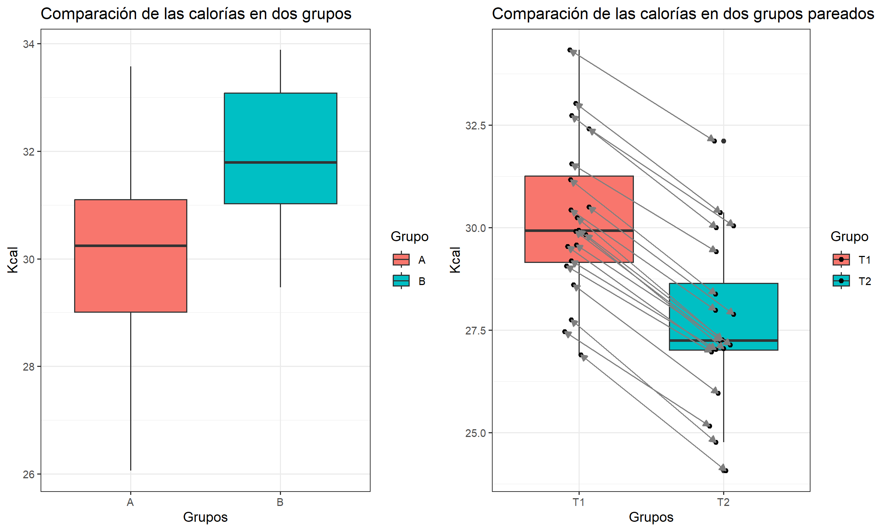
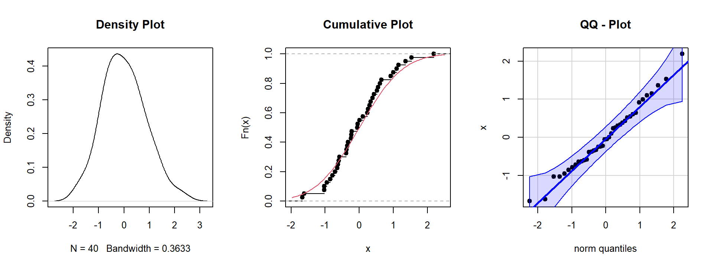
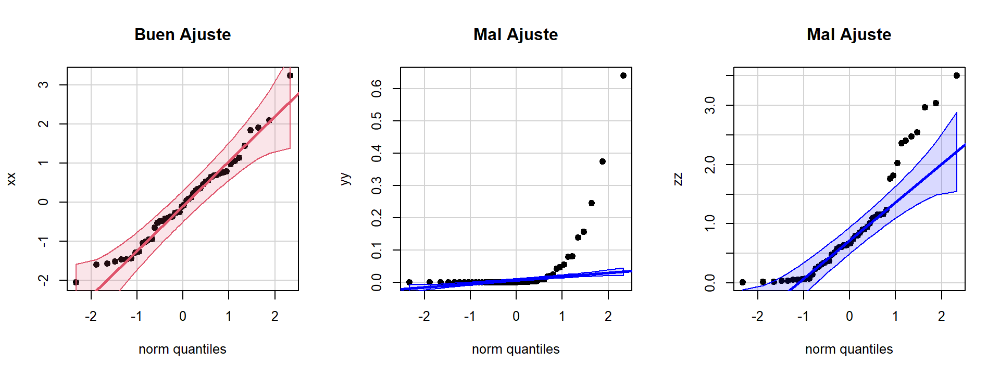
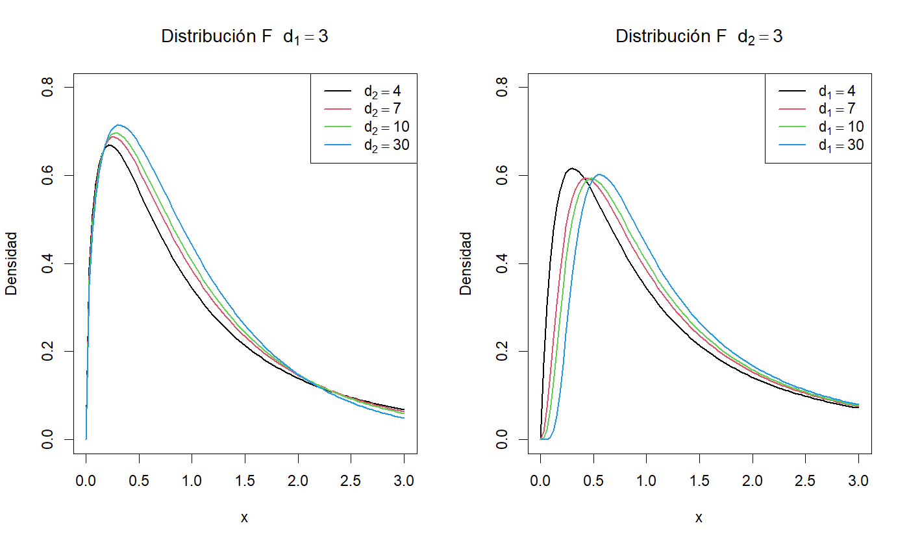
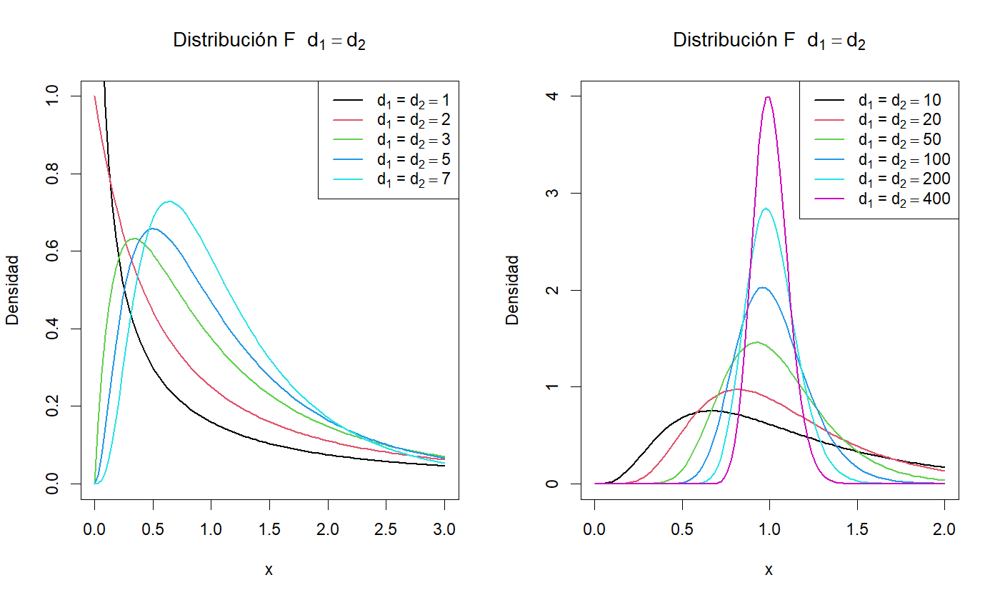

Hasta ahora se ha realizado estimaciones para un parámetros. Ahora, el interés es comparar dos grupos, es decir, comparar una característica común pero que se diferencian en dos estados distintos y que no existen otras condiciones adicionales que diferencien las dos muestras.
Para estos casos se presentan dos situaciones, que las muestras sean independientes o que las muestras sean pareadas, es decir, que es el seguimiento de un solo individuo en el cambio de estado (tiempo, área, condición).

Dada estas situaciones entonces surge la pregunta ¿Existe diferencia significativa entre los dos grupos? Para responder esta peregunta tenemos dos procedimientos para llegar a la respuesta:
A menudo se tiene interés en conocer la magnitud de la diferencia entre las proporciones de dos poblaciones. Es posible que se quiera comparar, por ejemplo, entre hombres y mujeres, dos grupos de edades, dos grupos socioeconómicos o dos grupos de diagnóstico con respecto a la proporción que posee alguna característica de interés.
Se tienen \(X_1,\dots,X_n\) y \(Y_1,\dots,Y_n\) dos muestras aleatorias cada una pertenecientes a una distribución binomial \(X\sim bin(n_1,p_1)\) y \(Y\sim bin(n_2,p_2)\). Un estimador puntual insesgado de la diferencia entre dos proporciones de las poblaciones se obtiene al calcular la diferencia de las proporciones de las muestras \(\hat{p_1}-\hat{p_2}\).
Tal como se ha visto, cuando \(n_1\) \(n_2\) son de gran tamano y las proporciones de la población no estan muy cerca de \(0\) o de \(1\), es posible aplicar el teorema central del limite y utilizar la teoría de la distribución normal para obtener los intervalos de confianza.
El error estándar de la estimación se calcula mediante la siguiente formula:
\[\Large\hat{\sigma}_{\hat{p_1}-\hat{p_2}}=\sqrt{\frac{\hat{p_1}(1-\hat{p_1})}{n_1}+\frac{\hat{p_2}(1-\hat{p_2})}{n_2}}\]
Entonces un intervalo de confianza al \(100(1-\alpha)\%\) para \(p_1-p_2\) se obtiene de:
\[(\hat{p_1}-\hat{p_2})\,\pm\,Z_{1-\alpha/2}\sqrt{\frac{\hat{p_1}(1-\hat{p_1})}{n_1}+\frac{\hat{p_2}(1-\hat{p_2})}{n_2}}\]
Entonces cuando el intervalo contenga el valor \(0\) significa que los grupos son estadísticamente iguales, eso se debe a: \[p_1 - p_2 = 0 \quad \rightarrow \quad p_1=p_2\]
Aronow y Kronzon identificaron los factores de riesgo coronado entre hombres y mujeres en una clínica de cuidados de la salud a largo plazo. De los 215 individuos negros, 58 tienen diabetes mellitus al igual que 217 individuos blancos de 1140. Elabore un intervalo de confianza de 90 por ciento de confianza para la diferencia entre las proporciones de las dos poblaciones.
Con la información suministrada podemos construir una tabla de contingencia de la siguiente manera:
| Diabetes | |||
|---|---|---|---|
| Si | No | Total | |
| Negros | 58 | 157 | 215 |
| Blancos | 217 | 923 | 1140 |
Como el interés es comparar entre negros y blancos por la presencia de diabetes, entonces se tiene que \(p_1=58/215\) y \(p_2=217/1140\). Así el intervalo de confianza al 90% está dado por:
\[\begin{align*} (\hat{p_1}-\hat{p_2})\,\pm&\,Z_{1-\alpha/2}\sqrt{\frac{\hat{p_1}(1-\hat{p_1})}{n_1}+\frac{\hat{p_2}(1-\hat{p_2})}{n_2}}\\\\ \left(\frac{58}{215}-\frac{217}{1140}\right)\,\pm&\,Z_{0.95}\sqrt{\frac{(58/157)({157/215})}{215}+\frac{(217/1140)(923/1140)}{1140}}\\\\ \end{align*}\] \[(-0.02608\,;\,0.13275)\]
El intervalo de confianza para la diferencia de proporciones contiene el \(0\%\) por lo tanto, no existe diferencias para la diabetes entre negros y blancos con una confianza del \(90\%\).
El procedimiento para comparar grupos a través de las medias estimadas, es similar a estimar un solo parámetro. Esto requiere de una serie de evaluaciones para seleccionar el método correcto de acuerdo al comportamiento de los datos.
El primer paso se realiza a través de los métodos de Pruebas de Hipótesis que se abordará en el siguiente capítulo, no obstante de acuerdo a las propiedades de la Distribución Normal se puede realizar una inspección gráfica.

Estos tres gráficos nos ayudarán para explorar el comportamiento de los datos y se pueden combinar con los gráficos de las distribuciones teóricas para evaluar qué tanto se parecen.
El primer gráfico se llama Gráfico de Densidad, muestra cómo es la distribución empírica de probabilidad, a diferencia del Histograma es una buena aproximación de las distribuciones continuas.
El segundo gráfico se llama Gráfico Densidad Acumulada Empírica, este gráfico es muy útil cuando se compara con La densidad acumulada de las distribuciones teóricas. Además, el gráfico muestra el salto de cada muestra en la función de densidad acumulada empírica.
El tercer gráfico se llama Gráfico de Comparación de Cuantiles, contrasta las muestras con los cuantiles de la distribución teórica. La ventaja de este gráfico es que dibuja una recta en la cual se espera que el conjunto de datos se ajuste, además dibuja bandas de confianza para mostrar hasta dónde se puede considerar que los puntos se ajustan a la recta.

La idea de este gráfico es que los puntos estén muy cercanos a la recta y entre los límites de confianza. Hay que tener cuidado en los extremos de las muestras, ya que algunos puntos pueden salir de las bandas pero esto no significa que no tengan la distribución que se está evaluando; si la mayoría de los puntos están ajustados a la recta y son muy pocos datos en los extremos que salen de las bandas, se puede considerar un buen ajuste.
Otro paso importante es verificar si las varianzas de ambos grupos son iguales o no, esto es importante porque la intención de la comparación de grupos a partir de la diferencia de promedios solamente debe comparar un factor o grupo que diferencia las muestras. La presencia de variabilidad excesiva en una de las muestras indicaría que existe otra condición no analizada que puede afectar la comparación, sin embargo, es posible controlar este problema estimando una variación conjunta entre los dos grupos.
La comparación de dos varianzas se realiza a través de su razón, \(\sigma_1/\sigma_2\) si las varianzas son iguales entonces la razón será \(1\). Por lo general, las variancias de las poblaciones son desconocidas y, en consecuencia, toda comparación que haga deberá basarse en las variancias de las muestras. Basado en el Teorema Central del Límite se puede demostrar que la razón de dos varianzas tiene una distribución F de Snedecor. Entonces un intervalo de confianza para la razón de varianzas está dado por:
\[F_{(\alpha/2,n_1-1,n_2-1)}<\cfrac{S^2_1/\sigma^2_2}{S^2_2/\sigma^2_2}<F_{(1-\alpha/2,n_1-1,n_2-1)}\\\\ F_{(\alpha/2,n_1-1,n_2-1)}<\cfrac{S^2_1}{S^2_2}\times\cfrac{\sigma^2_2}{\sigma^2_1}<F_{(1-\alpha/2,n_1-1,n_2-1)}\\\\ \cfrac{F_{(\alpha/2,n_1-1,n_2-1)}}{S^2_1/S^2_2}<\cfrac{\sigma^2_2}{\sigma^2_1}<\cfrac{F_{(1-\alpha/2,n_1-1,n_2-1)}}{S^2_1/S^2_2}\\\\ \cfrac{S^2_1/S^2_2}{F_{(\alpha/2,n_1-1,n_2-1)}}>\cfrac{\sigma^2_1}{\sigma^2_2}>\cfrac{S^2_1/S^2_2}{F_{(1-\alpha/2,n_1-1,n_2-1)}}\]
Un intervalo al \(100(1-\alpha)\%\) para \(\sigma^2_1/\sigma^2_2\) está dado por:
\[\cfrac{S^2_1/S^2_2}{F_{(1-\alpha/2,n_1-1,n_2-1)}}<\cfrac{\sigma^2_1}{\sigma^2_2}<\cfrac{S^2_1/S^2_2}{F_{(\alpha/2,n_1-1,n_2-1)}}\]

En el primer gráfico se evidencia cómo el parámetro \(d_2\) determina la altura de la densidad cuando el parámetro \(d_1\) está fijo, mientras que en el segundo se ve cómo el parámetro \(d_1\) mueve la distribución en el eje \(x\) de forma positiva cuando el parámetro \(d_2\) está fijo.

Cuando los parámetros de la distribución son iguales se nota que para valores \(<3\) la distribución tiene tendencia exponencial, y aparece de forma notable la varianza con parámetros \(d1=d2\geq4\). Por otra parte, si ambos parámetros son muy grandes, en el límite la distribución se transforma en una distribución degenerada en \(x=1\).
Resumen IC
Con:
\[SP=\sqrt{\cfrac{(n_1-1)S^2_1+(n_2-1)S^2_2}{n_1+n_2-2}}\] y
\[\large v= \cfrac{\left(\frac{S^2_1}{n_1}+\frac{S^2_2}{n_2}\right)^2}{\frac{\left(\frac{S^2_1}{n_1}\right)^2}{n_1-1}+\frac{\left(\frac{S^2_2}{n_2}\right)^2}{n_2-1}}\]
Se realizó un experimento para comparar el tiempo promedio requerido por el cuerpo humano para absorber dos medicamentos, \(A\) y \(B\). Se cree que el fármaco \(B\) se absorbe en promedio más rápido que el \(A\). Para verificarlo se eligieron al azar \(10\) personas para ensayar el fármaco \(A\) y se registran los tiempos que tardan en alcanzar un nivel específico en la sangre. El tiempo promedio requerido fue \(24.8\,min\), con una varianza \(15.57\,min^2\). Al ensayar el fármaco \(B\) en \(15\) personas elegidas al azar, el tiempo promedio fue \(22.6\,min\), con una varianza \(17.64\,min^2\). La experiencia ha mostrado que los tiempos de absorción de ambos medicamentos se distribuyen normalmente, donde la variabilidad en los tiempos es similar para ambos fármacos. Usando un I.C al \(95\%\) ¿Es cierta la creencia?
Suponga que \(X_1,\dots,X_{10}\) es una m.a que representa los tiempos de absorción de las \(10\) personas a las cuales se les administra el fármaco \(A\), asuma que \(X_i\sim N(\mu_X, \sigma_X^2)\). Análogamente, sea \(Y_1,\dots,Y_{15}\) otra m.a que representa los tiempos de absorción de las \(15\) personas a las cuales se les administra el fármaco B, asuma que \(Y_j \sim N(\mu_Y,\sigma_Y^2)\).
De acuerdo con el diagrama de árbol, ambas muestras son normales, las varianzas poblacionales son desconocidas (tenemos información muestral) y el enunciado indica que \(\sigma_X^2 = \sigma_Y^2\). Entonces el intervalo de confianza indicado es aquel basado en la t-student donde es necesario estimar la varianza conjunta \((SP)\). La información muestral revela que:
\[\bar{x} = 24.8 \qquad S_X^2 = 15.57 \qquad n=10\] \[\bar{y} = 22.6 \qquad S_Y^2 = 17.64 \qquad n=15\]
Así, un I.C al \(95\%\) para \(\mu_X − \mu_Y\) es:
\[(24.8-22.6)\pm t_{(0.975,23)}\color{blue}{SP}\sqrt{\frac{1}{10}+\frac{1}{15}}\] \[(2.2)\pm 2.0687 \color{blue}{\left(\sqrt{\frac{9\times 15.57 + 14\times 17.64}{23}}\right)}\sqrt{\frac{5}{30}}\]
\[(2.2)\pm 2.0687 \times \color{blue}{4.1024} \times \sqrt{\frac{1}{6}} \quad\Rightarrow\quad (-1.27\,;\,5.67)\]
Este intervalo permite concluir, que no hay diferencias significativas en los tiempos de absorción de ambos fármacos, con una confianza del \(95\%\).